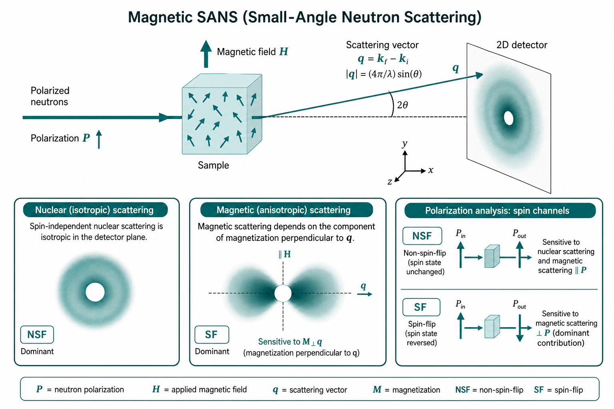

磁性小角中子散射（Magnetic SANS）
Nuclear vs magnetic scattering — polarized neutrons, spin-flip channels, and nanoscale magnetism
本导读以 Mühlbauer 等（2019）Magnetic small-angle neutron scattering（DOI: 10.1103/RevModPhys.91.015004）为核心，结合 Jeffries 等（2021）方法学综述与 Wiedenmann 专章中的 SANSPOL 实践，说明核散射与磁散射如何共存、极化中子如何拆分自旋通道，以及磁性纳米颗粒 / 畴结构在 SANS 中「看见」的是什么——以及它与宏观磁化强度测量的差别。
问题是什么
中子同时「感受」原子核与原子磁矩：相干散射振幅含核项与磁项。普通（非磁性）SANS 中我们调的是核散射长度密度（SLD）与溶剂的衬度；一旦样品有纳米尺度磁化不均匀（颗粒、畴壁、涡旋、skyrmion 等），倒易空间还会出现磁散射贡献——其依赖外场方向、中子极化与自旋翻转通道（Mühlbauer 2019）。
磁 SANS 探测的是 $q$ 窗口内（典型 $0.01\lesssim q\lesssim5\,\mathrm{nm}^{-1}$，对应结构尺寸约 1–300 nm）磁化矢量场 $\mathbf{M}(\mathbf{r})$ 的傅里叶分量，而非宏观体积平均 $\langle\mathbf{M}\rangle$（Mühlbauer 2019）。均匀饱和磁化在严格意义上不产生小角磁散射——只有空间涨落才给出 $q\neq0$ 信号。
核心问题因此是：（1）如何把核散射与磁散射从总强度中分离；（2）极化中子 / 自旋分析（SANSPOL、POLARIS）给出哪些额外约束；（3）SANS 敏感尺度与 VSM / SQUID 等体积平均磁化有何不同。误解这三点，容易把「磁散射峰」直接当成「畴尺寸」或把「$I(q)$ 消失」当成「样品不磁」。本专题记为 磁性 SANS。

文献主线
Mühlbauer 等 2019：Rev. Mod. Phys. 总览
该综述系统整理磁性 SANS 的截面公式（未极化、半极化 SANSPOL、全极化 POLARIS）、从粒子–基体图像到微磁学（micromagnetics）描述的过渡，并覆盖永磁体（Nd–Fe–B）、磁性钢、纳米颗粒/铁流体、相分离氧化物、skyrmion 与第二类超导体涡旋晶格等应用（Mühlbauer 2019）。要点：
- 磁 SANS 本质是长波长磁化傅里叶分量的探针；需区分漫散射磁 SANS 与磁 Bragg 衍射（螺旋磁、skyrmion 晶格、超导涡旋晶格各有专章）。
- Halpern–Johnson 矢量 $\mathbf{Q}=\hat{\mathbf{q}}\times[\hat{\mathbf{q}}\times\widetilde{\mathbf{M}}(\mathbf{q})]$ 体现偶极起源：仅 $\mathbf{M}_\perp$ 贡献磁散射。
- 两种标准几何：$\mathbf{k}_0\perp\mathbf{H}_0$（横向场，2D 各向异性图样丰富）与 $\mathbf{k}_0\parallel\mathbf{H}_0$（纵向场，NSF 主要探 $\widetilde{M}_z$）。
- 微磁学 + 小 misalignment 近似可解析给出 $\widetilde{M}_{x,y,z}(\mathbf{q})$，预测 spin-misalignment 散射的「三叶草」（clover-leaf）与「飞碟」各向异性（Mühlbauer 2019）。
Jeffries 等 2021：方法学坐标系
Nature Reviews Methods Primer 将 SAXS/SANS 放在同一 $q$、$P(q)$、$S(q)$ 框架下，并点明中子对磁矩敏感是相对 X 射线的独特能力之一。对非磁专家：先建立核衬度直觉（见 SANS 衬度专题），再进入极化 / 外场依赖的磁通道（Jeffries 2021）。
Wiedenmann：SANSPOL 与磁性纳米结构
书中专章强调用极化中子做磁衬度变化（SANSPOL）：在核散射强、磁散射弱（或反之）的体系中分离核–壳颗粒、死层、非磁表面活性剂胶束与磁核，并在浓铁流体中观察外场诱导的有序。SANSPOL 可与同位素衬度变化联用——在 H/D 匹配某一化学组分的同时翻转自旋，识别多相体系中尺寸相近的磁/非磁粒子（Wiedenmann 2006）。
核散射 vs 磁散射
振幅与截面直觉
弹性相干散射中，磁相互作用只耦合到垂直于散射矢量 $\mathbf{q}$ 的磁化分量（$\mathbf{M}_\perp$）。核振幅 $\widetilde{N}(\mathbf{q})$ 与磁 Halpern–Johnson 振幅进入强度时出现交叉项与纯磁项；未极化测量得到的是对自旋态平均后的组合。稀溶液磁性颗粒常写成核形式因子与磁形式因子的叠加，浓体系则还需结构因子与取向平均（Mühlbauer 2019；Wiedenmann 2006）。
关键几何约束：
$$I_{\mathrm{mag}}(\mathbf{q})\;\propto\;\bigl|\widetilde{M}_\perp(\mathbf{q})\bigr|^2,\qquad \mathbf{M}_\perp=\mathbf{M}-\bigl(\mathbf{M}\cdot\hat{\mathbf{q}}\bigr)\hat{\mathbf{q}}.$$磁散射长度 $b_m\cong b_H\mu_a$（$b_H=2.70\times10^{-15}\,\mathrm{m}\,\mu_B^{-1}$），与核 $b$ 同量级；铁磁体磁 SLD 可与核 SLD 相当（Wiedenmann 2006）。
因此：$\mathbf{M}\parallel\mathbf{q}$ 的傅里叶分量在该 $\mathbf{q}$ 方向「看不见」；二维各向异性图样（扇形、条纹）是磁性 SANS 的指纹，而非仪器伪影。
与核衬度的对照
| 核（nuclear）SANS | 磁（magnetic）SANS | |
|---|---|---|
| 对比度来源 | 核 SLD 差 $\Delta\rho$ | 磁化空间涨落 $\mathbf{M}(\mathbf{r})$ |
| 调参手段 | H/D、氘代、溶剂匹配 | 外场大小/方向、温度、极化与自旋分析 |
| 各向同性 | 粉末/溶液平均时常近似各向同性 | 一般对 $\mathbf{q}$–$\mathbf{H}$ 夹角敏感 |
| 饱和均匀磁化 | — | 不产生小角磁散射（无涨落） |
| 典型对象 | 形状、尺寸、组分分布 | 畴、颗粒磁矩、界面死层、涡旋/skyrmion |
极化中子直觉
入射中子自旋可制备为沿导引场（常与外场 $\mathbf{H}$ 平行）的「上」或「下」。仪器链：超镜透射偏振器（P）→ 射频自旋翻转器（F）→ 样品 → $^3$He 自旋分析器（A）（Mühlbauer 2019）。
半极化 SANSPOL 截面（$\mathbf{k}_0\perp\mathbf{H}_0$ 示意）：
$$\frac{d\Sigma_\perp^{\pm}}{d\Omega}\propto |\widetilde{N}|^2+|\widetilde{M}_x|^2+|\widetilde{M}_y|^2\cos^2\theta+|\widetilde{M}_z|^2\sin^2\theta+\cdots+(2P-1)(2\epsilon^{\pm}-1)\times(\text{核–磁干涉项}),$$其中 $P$ 为入射极化度，$\epsilon^{\pm}$ 为翻转器状态；$I^+$ 与 $I^-$ 的差突出核–磁干涉，适合铁流体中「强磁核 + 弱核壳胶束」体系（Mühlbauer 2019；Wiedenmann 2006）。
- 未极化： 核 + 磁混叠；外场旋转可看各向异性，但通道不干净。
- 半极化（SANSPOL）： 测 $I^+$、$I^-$；差值敏感核–磁干涉，和值含 $|N|^2+|M|^2$ 组合——适合核强磁弱的铁流体 / 核–壳颗粒。
- 全极化 + 自旋分析： 同时分辨 NSF / SF，约束 $\mathbf{M}$ 的哪些笛卡尔分量在散射（Mühlbauer 2019）。
- 场几何： 记录 $\mathbf{H}$ 相对探测器平面与 $\mathbf{q}$ 的取向；发表须给出场强、场方向与是否场冷。
自旋翻转 / 非翻转（SF / NSF）
出射自旋相对入射自旋不变 → 非自旋翻转（NSF）；翻转 → 自旋翻转（SF）。在常见「场沿 $z$、散射在 $xy$ 平面」约定下（细节随仪器坐标而定）：
- NSF： 主要敏感核散射以及平行于导引场的磁化傅里叶分量（与几何投影有关）；
- SF： 敏感垂直于导引场的磁化分量——常用于突出畴壁、横向涨落或非共线结构。
实践口诀：想拆核与磁，先极化；想拆磁矩方向，再分析自旋。仪器效率（翻转器、分析器透过率）会漏进错误通道，须用标准样品与空跑校正（Mühlbauer 2019）。
磁性纳米颗粒与畴：SANS 看见什么
纳米颗粒 / 铁流体
单畴颗粒的磁散射反映磁核尺寸与磁矩取向分布；核散射反映化学核–壳（氧化物壳、表面活性剂）。SANSPOL 可在相近尺寸的非磁胶束背景中挑出磁核，并检出磁死层（磁半径 < 化学半径）（Wiedenmann 2006）。Co、磁铁矿等铁流体中可定量核–壳组成、磁矩与粒径分布；浓体系中外场可诱导链状或赝晶有序，低 $q$ 峰与 $S(q)$ 场依赖（Wiedenmann 2006；Mühlbauer 2019）。
块体中的畴与微磁学
软磁合金、纳米晶永磁体、磁性钢中，SANS 看到的是畴壁、晶粒间磁化扰动、相分离磁矩差、交换与磁静力耦合引起的 spin-misalignment——需用微磁学模拟把 $I(\mathbf{q})$ 与交换刚度、各向异性、$M_s$ 空间涨落联系起来（Mühlbauer 2019）。Nd–Fe–B 永磁体中 spin-misalignment 散射在饱和态扣除后仍保留「三叶草」各向异性，低场下出现沿场方向的「飞碟」图案与磁静力尖峰（Mühlbauer 2019）。
复杂磁结构与超导体
Mühlbauer 2019 另专章讨论：钙钛矿锰氧化物/钴氧化物中的磁相分离、非共线螺旋磁与 skyrmion 晶格的磁衍射几何、以及第二类超导体中涡旋晶格的 SANS——这些属于磁 Bragg / 有序磁结构，与上文「漫散射磁 SANS」互补，解释时勿混用 Guinier 球模型。
SANS 所见 vs 宏观磁化
| 观测量 | 宏观磁化（VSM/SQUID 等） | 磁性 SANS |
|---|---|---|
| 空间信息 | 体积平均 $\langle\mathbf{M}\rangle$ | $\mathbf{M}(\mathbf{r})$ 的傅里叶变换（$q$ 窗口内） |
| 均匀饱和 | $M_s$ 最大 | 磁小角信号可趋于零（涨落消失） |
| 矫顽 / 回滞 | $M(H)$ 曲线 | 可在同一 $H$ 下看畴结构如何重排 |
| 「磁体积」 | 总磁矩 / $M_s$ | 磁形式因子给出的磁尺寸，可与核尺寸不同 |
因此：$M$–$H$ 饱和不保证 SANS 磁信号消失（若仍有纳米尺度非共线或缺陷钉扎）；反之，弱净磁化样品仍可能有强磁 SANS（正负磁畴抵消净矩，但涨落很大）。
- 先核后磁： 明确核衬度（溶剂、氘代）；必要时先做非磁对照或匹配（衬度专题）。多相体系考虑 SANSPOL + 同位素匹配联用（Wiedenmann 2006）。
- 场与几何： 记录 $H$、方向、升温/场冷历史；二维各向异性是否随场旋转。明确 $\mathbf{k}_0\perp\mathbf{H}_0$ 还是 $\parallel$（Mühlbauer 2019）。
- 极化模式： 未极化 / 半极化 SANSPOL / 全极化 POLARIS 按信号强度与问题复杂度选择；用 POL-CORR、BERSANS 等校正翻转效率与通道串扰（Mühlbauer 2019）。
- 绝对强度： 对照水、多孔硅或 V 标样；截面不确定度通常 5–10%（Mühlbauer 2019）。
- 尺度窗口： 确认目标结构落在 $q$ 范围内；低 $q$ 不够则考虑 VSANS/USANS。
- 与磁测量交叉： 同批次测 $M(H)$；解释时区分净磁化与涨落。
- 模型诚实： 颗粒体系可用核+磁形式因子；块体复杂磁结构优先引用微磁学或 spin-misalignment 理论，而非单一球模型（Mühlbauer 2019）。
实践要点与坑
- 把 2D 各向异性当探测器坏了 → 如何判断： 旋转样品或磁场后图样跟着转 → 磁散射；不转 → 查准直/掩模。
- 饱和后仍有「磁」信号 → 如何判断： 可能是核散射各向异性、织构、或残余微磁涨落；用极化差或 SF 通道鉴别。
- 忽略核–磁干涉 → 如何判断： 半极化 $I^+$、$I^-$ 不对称却只用平均值拟合球模型 → 尺寸/衬度偏。应显式拟合干涉项或切换通道。
- $M_s$ 很大却 SANS 很弱 → 如何判断： 磁化在 $q$ 窗口内几乎均匀；换更低 $q$ 或看畴壁敏感几何。
- 净磁化接近零就以为「无磁散射」→ 如何判断： 多畴抵消 $\langle M\rangle$ 但 $|\widetilde{M}(q)|^2$ 可很大；查 SF 与退磁态数据。
- 直接把峰位当「颗粒直径」→ 如何判断： 浓体系峰常来自 $S(q)$ 或有序；稀释并检查外场依赖（Jeffries 2021；Mühlbauer 2019）。
- 混淆漫散射磁 SANS 与磁衍射峰 → 如何判断： skyrmion/涡旋晶格给出尖锐 Bragg 斑；纳米晶粒畴壁涨落是漫散射。查 $q$ 位置是否满足晶格条件（Mühlbauer 2019）。
- 块体用 Guinier 半径当畴尺寸 → 如何判断： spin-misalignment 图案随 $H$ 剧变；应用微磁学拟合而非球模型（Mühlbauer 2019）。
- 自旋通道串扰 → 如何判断： NSF 中出现本应只在 SF 的特征，或反之；用分析器效率与泄漏矩阵校正。
相关词条
磁性 SANS、 衬度、 散射长度密度（SLD）、 形式因子 $P(q)$、 结构因子 $S(q)$、 散射矢量 $q$
相关学习章
- 02 散射基础 — $q$、衬度、$P(q)$ 与 $S(q)$
- 09 应用路径 — 按问题类型选择 SAXS/SANS / 衬度 / 磁通道
- SANS 衬度变化 — 核 SLD、H/D 匹配；做磁实验前的核衬度基础
文献列表
- Magnetic small-angle neutron scattering. Sebastian Mühlbauer et al. (2019). DOI: 10.1103/RevModPhys.91.015004
- Small-angle X-ray and neutron scattering. Cy M. Jeffries et al. (2021). DOI: 10.1038/s43586-021-00064-9
- Small Angle Neutron Scattering Investigations of Magnetic Nanostructures. Albrecht Wiedenmann. DOI: 10.1016/B978-044451050-1/50011-2